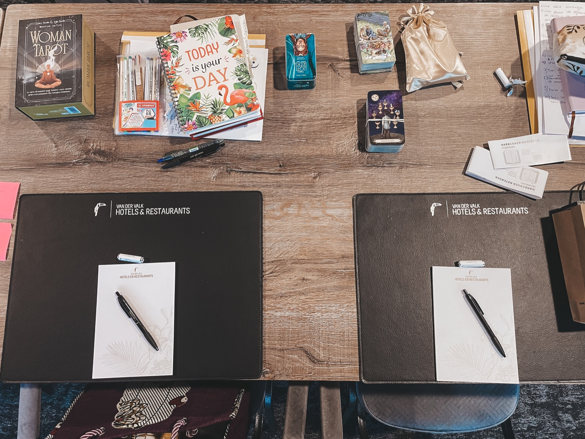
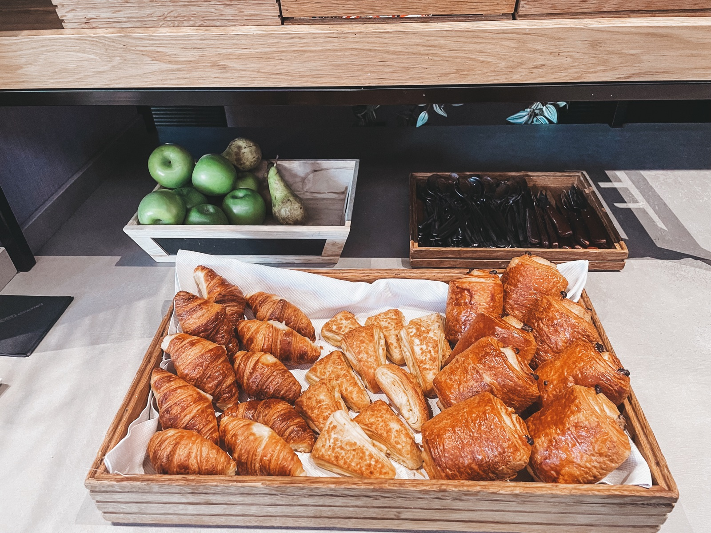
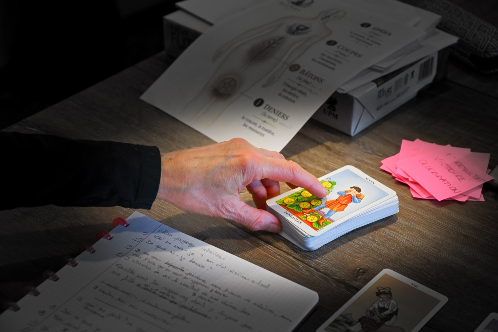

1
Psychologie
Comprendre ce qui se joue en nous.
Explorer nos émotions, nos comportements, nos besoins et les mécanismes qui influencent nos réactions.

PSYCHOLOGIE · NEUROSCIENCES · SYMBOLISME
Impression de stagner ? Difficulté à vous décider ? Peur de ne pas être à la hauteur, légitime ? Découvrez une approche du tarot qui vous invite à explorer vos émotions, à questionner vos pensées et à poser un regard nouveau sur vous-même et sur votre vie.
Apprenez à lire les cartes autrement et à en faire un véritable outil de connaissance de soi.
Avec la méthode SolAme, vous apprenez à comprendre les cartes plutôt qu’à réciter leur signification. Vous développez votre capacité à construire votre interprétation cohérente, nuancée et réfléchie, sans laisser vos attentes prendre toute la place.
Nivelles
LES HORAIRESAccueil à partir de 8h30
Formation de 9h – 17h30Petit-déjeuner de bienvenue offert : viennoiseries, fruits frais, laitages, ...
LE GROUPE14 participants maximum
L’INVESTISSEMENT350 €Supports et coffee corner compris

La méthode SolAme est née de la rencontre entre trois regards complémentaires.
Les cartes ne pensent pas à votre place. Elles ne détiennent pas de vérité absolue sur vous. Elles vous invitent à penser autrement, à questionner vos perceptions et à faire émerger vos propres réponses. C’est cette approche humaine, structurée et accessible que je vous propose de découvrir chez SolAme.
Comprendre ce qui se joue en nous.
Explorer nos émotions, nos comportements, nos besoins et les mécanismes qui influencent nos réactions.
Éclairer notre fonctionnement.
Découvrir des clés de compréhension du cerveau, de nos mécanismes cognitifs et émotionnels et de notre manière de percevoir les situations.

Ouvrir de nouvelles perspectives.
Explorer les images et les archétypes du tarot pour questionner nos habitudes de pensée et envisager d’autres façons de comprendre une situation.

Ici, le tarot n’est jamais utilisé comme un outil de divination.
Il devient un support de réflexion profondément humain.

Qui suis-je ? Découvrez-le sur mon site lilyhorlait.be.
« Je ne vous apprendrai pas à croire aux cartes. Je vous apprendrai à réfléchir avec elles. »— Lidwina HorlaitJe réserve ma place
Je suis psychologue depuis 2001, psychothérapeute depuis 2007 et passionnée et certifiée en neurosciences.
Depuis plus de 25 ans de pratique, je m’intéresse à ce qui nous fait penser, ressentir, agir… et parfois nous empêche d’avancer.
Au fil de mon parcours, j’ai développé au bénéfice de mes patients une approche du tarot psychologique qui associe la richesse symbolique des cartes à ma connaissance du fonctionnement humain.
Mon intention est de vous transmettre une méthode claire, structurée et accessible, qui vous permette de comprendre les cartes sans vous perdre dans des significations à mémoriser.
J’aime transmettre, partager, susciter la curiosité et accompagner ces merveilleux déclics qui vous amènent à voir les choses autrement, à envisager une ressource jusque là inconnue.
Chez SolAme, vous trouverez un cadre sérieux et bienveillant, où vous pourrez expérimenter, poser vos questions et surtout oser vous tromper. Parce qu’apprendre, c’est aussi essayer, s’ajuster et découvrir par soi-même.
Une méthode pour vous approprier le tarot dans son entièreté, développer votre autonomie et utiliser les cartes comme un outil de réflexion et d’auto-coaching, selon vos envies et vos besoins, selon vos événements de vie, qu’ils soient majeurs ou mineurs.
Découvrir la structure du jeu et les clés de lecture des 78 cartes pour comprendre leur logique et vous approprier leur langage.
Inutile de mémoriser mécaniquement 78 définitions ! Vous découvrirez les repères qui facilitent la compréhension des cartes. Vous apprendrez à retrouver leur sens plutôt qu’à réciter une signification.
Explorer leurs nuances, leurs paradoxes et les subtilités des cartes inversées pour enrichir votre compréhension et affiner votre lecture.
Découvrir des tirages accessibles et apprendre à choisir une disposition adaptée à la question que vous souhaitez explorer.
Comment éviter de voir dans une carte uniquement ce que l’on espère ou ce que l’on redoute ?
Vous apprendrez à prendre du recul, à vous appuyer sur des repères précis et à confronter votre interprétation à la question posée et à son contexte.
L’objectif est de reconnaître vos projections pour construire une lecture nuancée, cohérente et réfléchie.
Explorer une situation, mettre en lumière vos ressentis, identifier vos ressources et envisager d’autres possibilités.
Apprendre à formuler des questions pertinentes qui invitent à réfléchir, à approfondir une situation et à faire émerger de nouvelles pistes.
Développer votre autonomie pour construire vos propres interprétations et poursuivre votre exploration après la formation.
15 heures de formation en présentiel, les supports pédagogiques, votre référentiel pour vous accompagner dans la découverte des cartes et l’accès libre au coffee corner, incluant le petit déjeuner dès 8h30.
Les apprentissages alternent explications, observations, exercices pratiques et échanges pour vous permettre d’expérimenter concrètement la méthode.
Le lunch est libre et n’est pas compris dans le tarif, afin que chacun puisse s’organiser selon ses préférences.



Débutant ou curieux, vous avez envie de savoir utiliser le tarot avec une approche humaine, intuitive, sérieuse et structurée.
Je réserve ma placeAucune connaissance préalable n’est nécessaire.
Vous n’avez pas besoin d’un don particulier ni de tout mémoriser. Votre curiosité et votre envie d’apprendre sont un excellent point de départ.
Avec la méthode SolAme, vous apprenez à comprendre les cartes, à prendre du recul sur vos interprétations et à raisonner à partir de leurs symboles.
Observer, manipuler, questionner, partager ses idées, découvrir une nouvelle nuance… et parfois voir une évidence sous un autre angle.
Quelques instants de pratique et de partage dans la bulle SolAme.
UNE AUTRE MANIÈRE DE REGARDER L’HUMAIN
Une carte ne changera pas votre vie à votre place.
Mais une question pertinente, un regard différent ou une prise de conscience peuvent ouvrir un chemin que vous n’aviez pas envisagé.
C’est ce que je souhaite vous faire découvrir chez SolAme : une autre manière d’aborder le tarot, avec curiosité, discernement et plaisir d’apprendre pour votre bénéfice quotidien.
Vous découvrirez comment comprendre les cartes sans dépendre de significations toutes faites, apprises par cœur, mais surtout comment construire vos interprétations en prenant du recul sur vos propres projections.
Pendant deux jours, je vous accompagnerai dans cette découverte pour vous donner les clés d’une pratique autonome, que vous pourrez poursuivre à votre rythme et selon vos besoins.
Vous avez envie de découvrir le tarot autrement ?
Je serai heureuse de vous accueillir dans la bulle SolAme.
Je réserve ma placeGroupe volontairement limité à 14 participantsUNE QUESTION ?
Vous hésitez encore ? Vous souhaitez vérifier si cette formation correspond à vos attentes ?
Pour toute question sur la formation ou pour réserver votre place, contactez-moi. Je prendrai le temps de vous répondre avec plaisir.
Au plaisir d’échanger avec vous !
Lidwina Horlait
Psychologue depuis 2001 Psychothérapeute depuis 2007 SolAme, l’école du Tarot Psychologique
« Formation qualitative avec une solide structure, accompagnement bienveillant et centré sur nos besoins. Je recommande vivement. »
Audrey Mahieu
« Belle découverte. Beaucoup de subtilités dans les lames. Faire travailler son intuition dans le cadre et la logique du tarot psy. »
Vanessa Rae
« La formation était très intéressante et bien expliquée. »
Bernadette Thomas
« Très chouette formation sur le tarot psychologique. »
Maria Casolo
« Magnifique moment ! Un beau mélange de théorie, de pratiques, le tout dans un partage bienveillant ! »
Isabelle Vleminckx
« Super moment de partage et d’apprentissage. »
Karelle Gras
Ces avis proviennent de Google Maps.